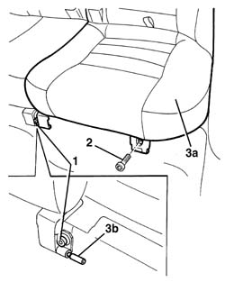

7050A22 rear seat cushion - r+r
- Path
- Procedures > 70 FITTINGS > 7050 REAR SEATS > 7050A rear seat assembly > 7050A22 rear seat cushion - r+r
- Kind
- repair procedure (removal / refitting; the operation number is the code)
- Applies to
- all engines; all production periods
- Interactive page
- https://sloeber94.github.io/elrnDB-a156/en/#/3238916
Applies to: all engines; all production periods; only with equipment: Station Wagon
 Removing
Removing
 Refitting
Refitting1. Loosen the central hinge bolt.
2. Undo the side hinge bolt.
3. Remove the cushion (3a), releasing it from the pin (3b).

Applies to: all engines; all production periods; only with equipment: Station Wagon
Refitting
RemovingCheck that the rear seat cushion is intact and shows no signs of damage.
Place the cushion in its seating, engaging it on the pin of the central hinge.
Tighten the hinge bolts.
 | Fastening | Component | Ø | Value (daNm) |
|---|---|---|---|---|
- | Bolt | REAR SEAT CUSHION | M8 | 2.4 |